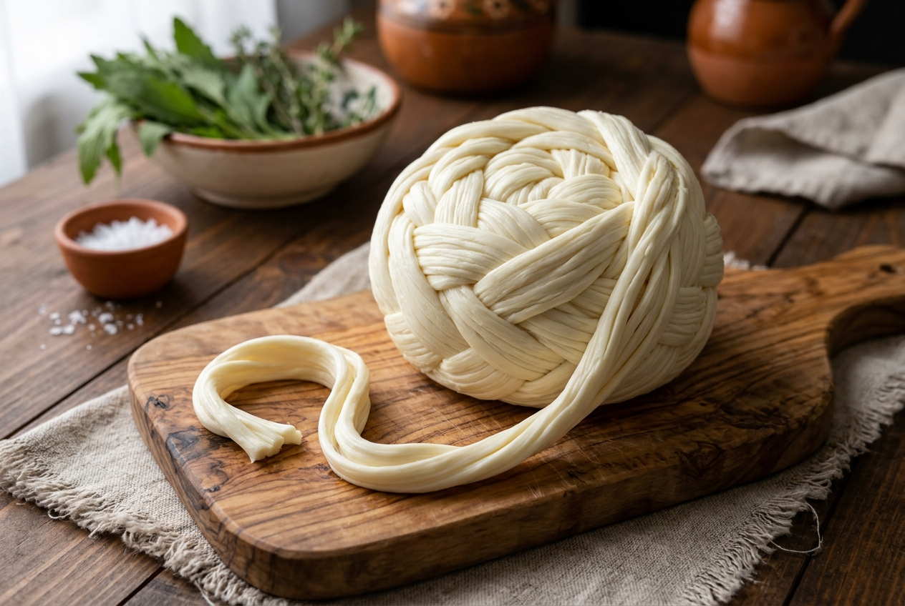
Queso Oaxaca (1 kg)
Se deshebra solo. Para quesadillas, gringas, chiles rellenos y queso fundido.
$92
Todos se hacen por pedido. Los precios están en pesos mexicanos.
Precios de referencia, sujetos a cambio.

Se deshebra solo. Para quesadillas, gringas, chiles rellenos y queso fundido.
$92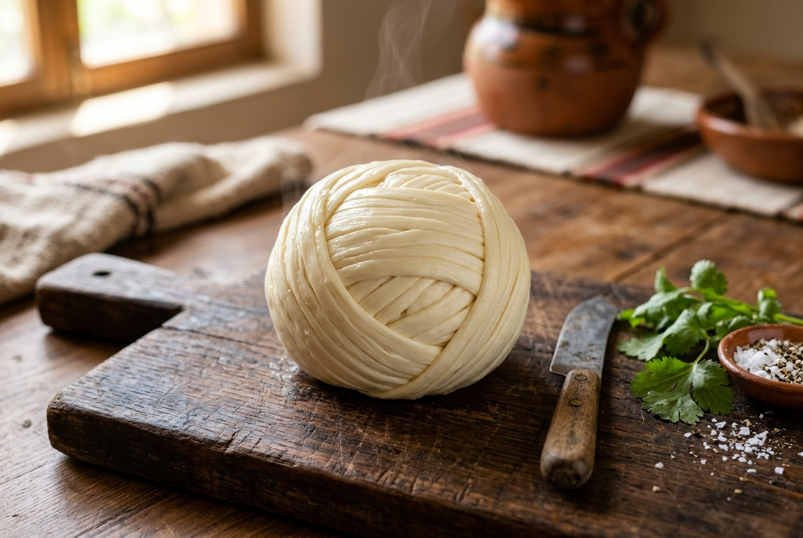
La misma madeja en media presentación, para una comida familiar.
$46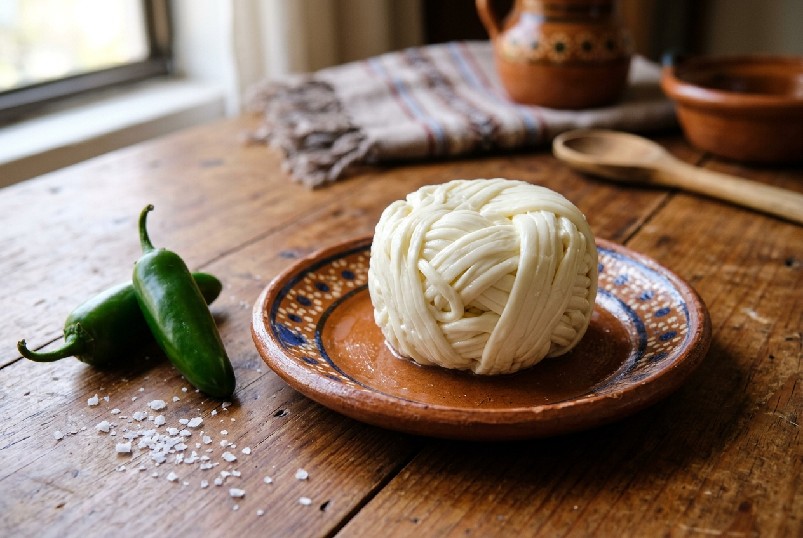
Presentación chica: para probar o para una quesadilla rápida.
$23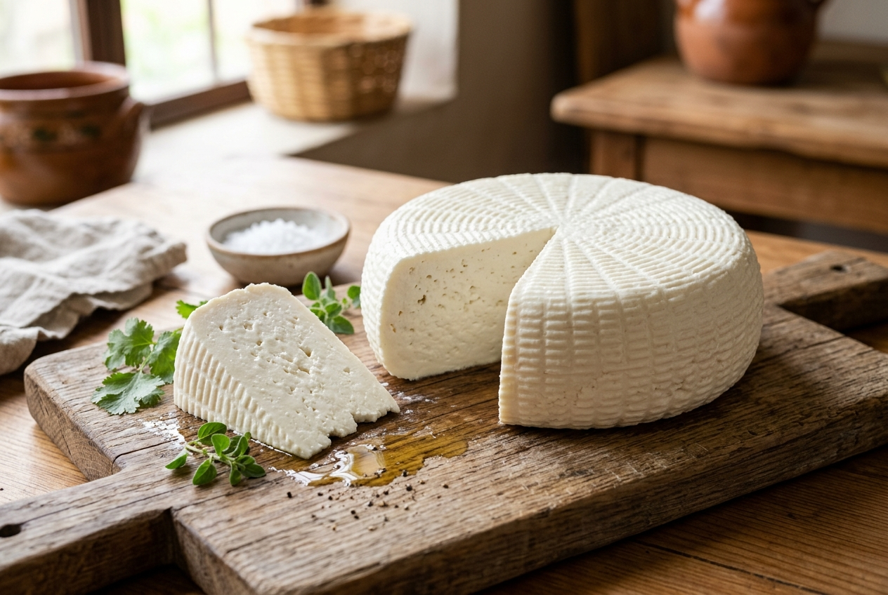
No se derrite, se dora. Ideal a la plancha, en ensaladas y en tortitas.
$45Porción individual para una tortita o una ensalada pequeña.
$23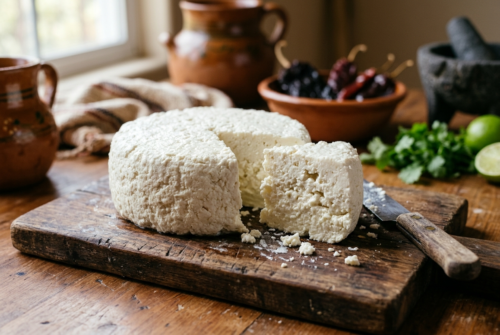
Sabor fuerte y salado. Perfecto con frijoles, chilaquiles y molletes.
$45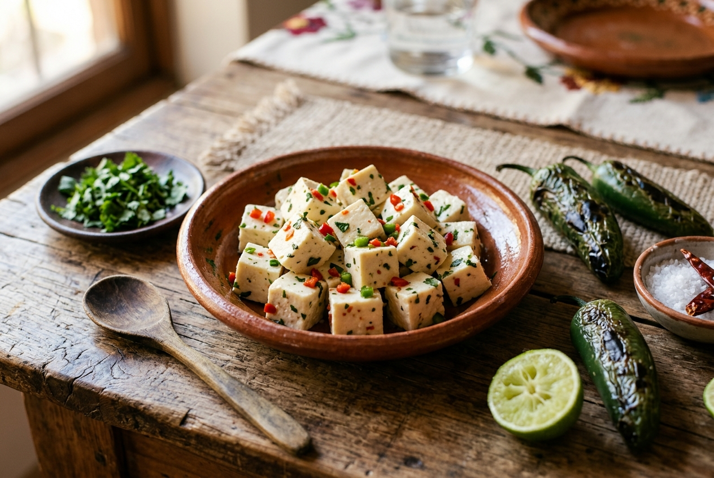
Con epazote o chipotle. Para botanear con totopos o sobre frijoles.
$45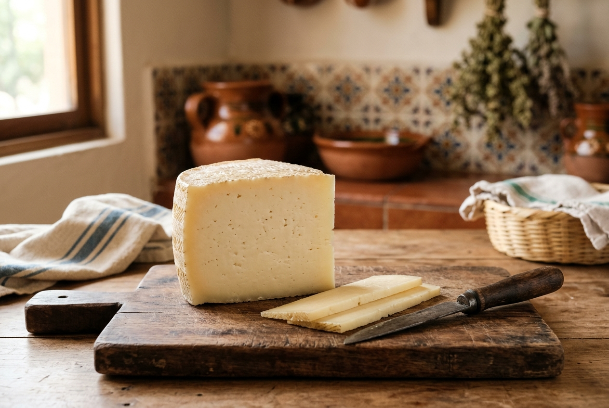
Firme y suave. Ralla para pizza y pasta, gratina y aguanta el sándwich.
$65Suave y cremoso. Se derrite parejo: ideal para quesadillas, pastas y salsas.
$70Fresco y salado, tipo canasta. Para rebanar en sándwich o con frijoles.
$50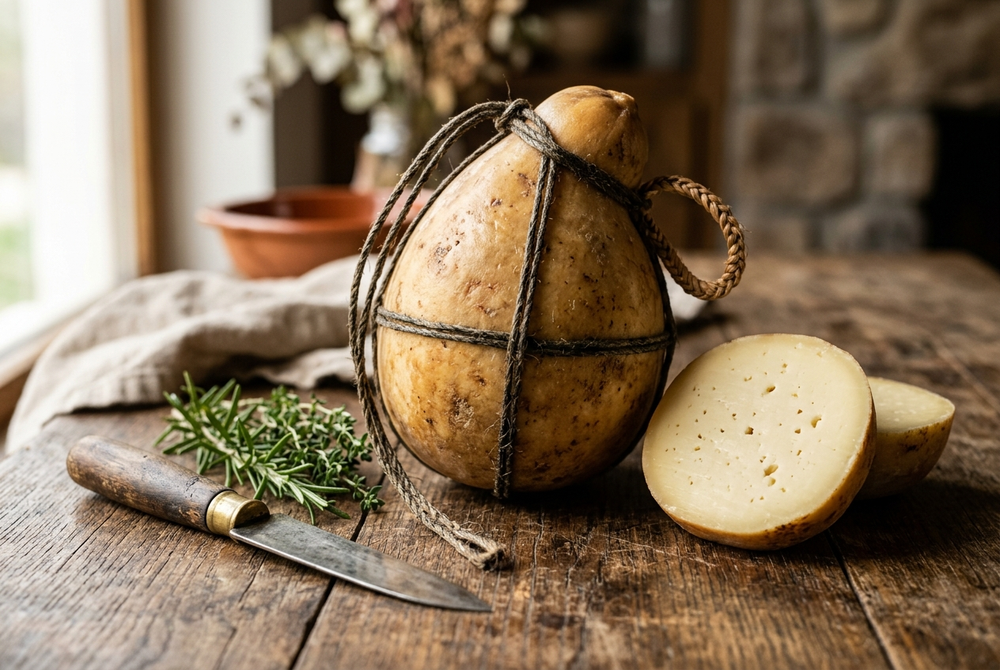
Sabor suave y ahumado. Ralla para pizza, gratina o sírvelo en tabla.
$95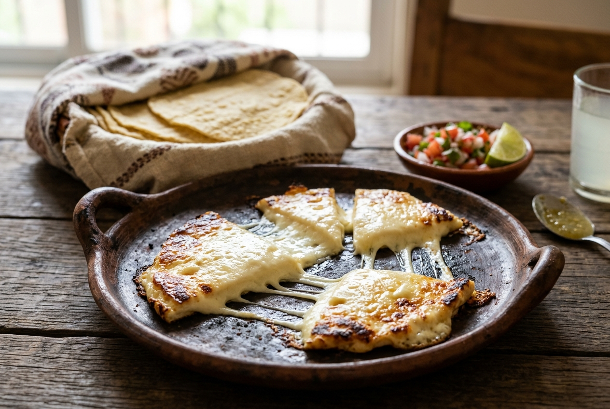
Se derrite y se estira. El de las quesadillas y los chiles rellenos.
$85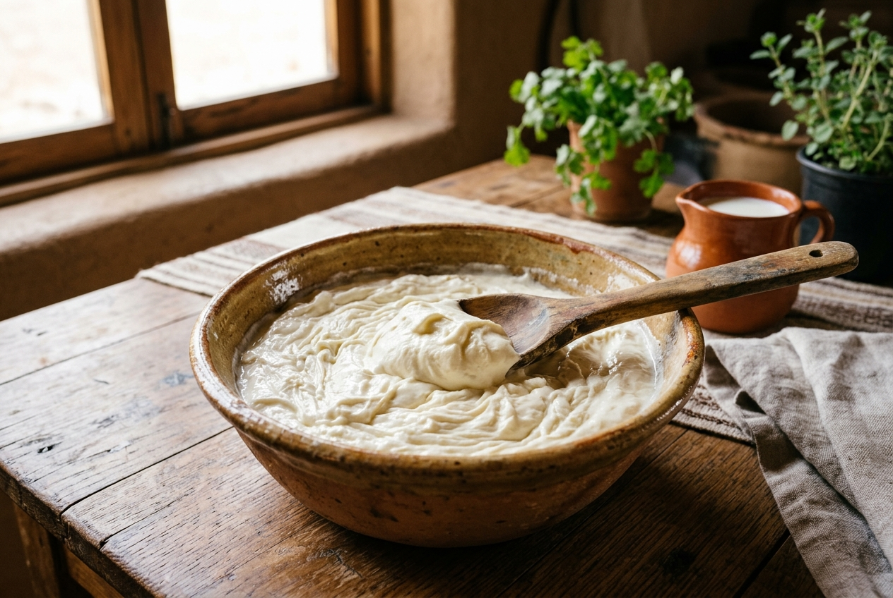
Recién sacada. Para untar en pan, en tamales, con fresas o en el café.
$42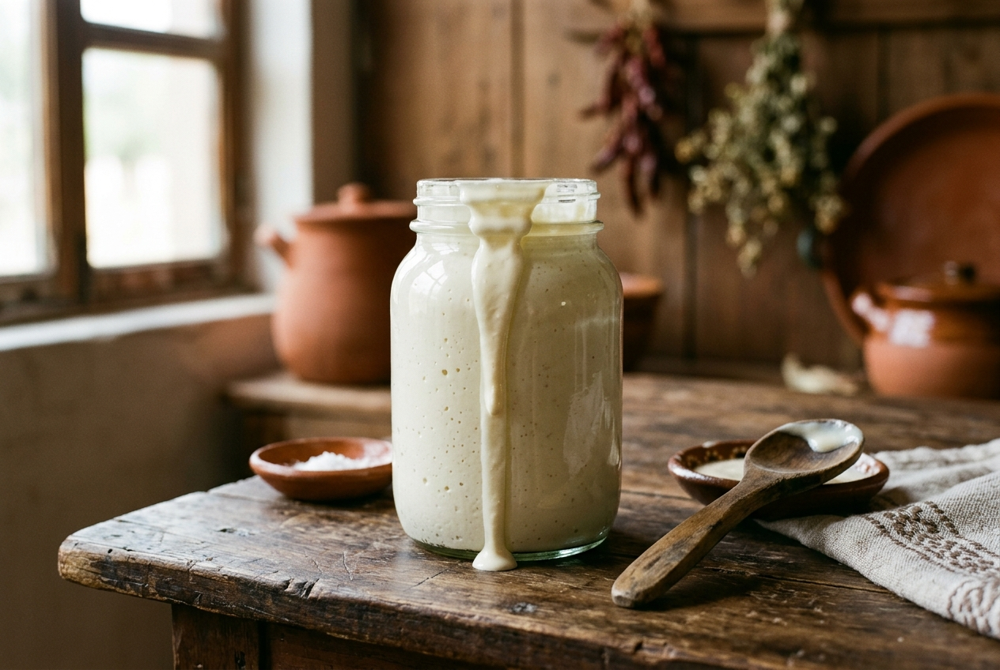
Espesa y fresca, se vende por medio litro. Para tacos, enchiladas, sopas o con fresas.
$40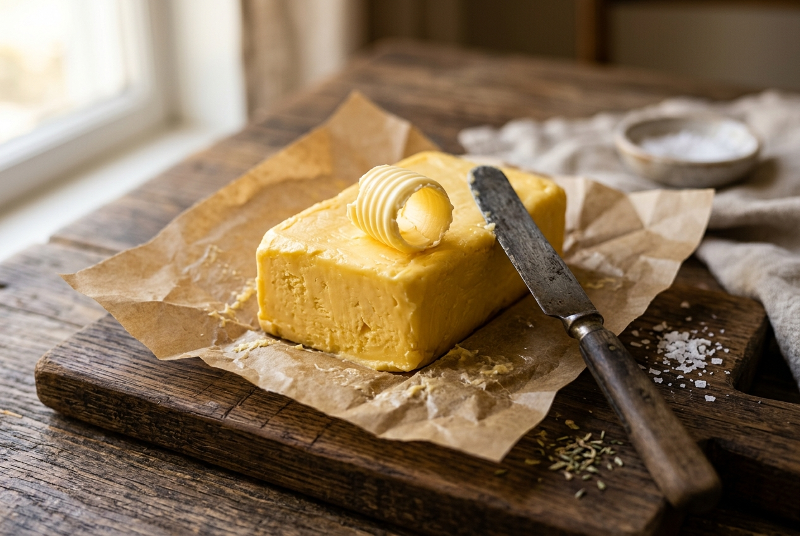
Hecha con la nata de la leche. Para untar en pan, hotcakes o para cocinar.
$60Fresco y ligero. En tacos, con miel, en ensaladas o para rellenar chiles.
$23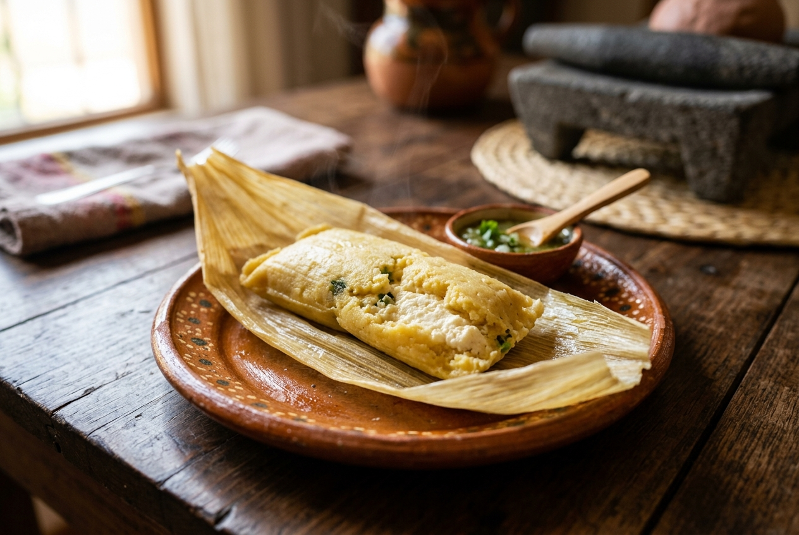
Individual y dulce. Se calienta al vapor o en microondas en 5 minutos.
$9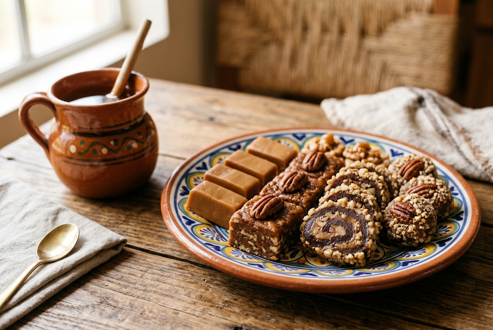
Tipo cajeta. Se comen solos o untados en pan.
$10¿Ya sabes qué quieres? Pide en línea y te calculamos el total.
Hacer mi pedido